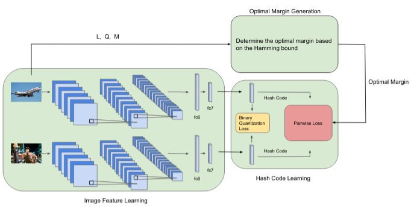
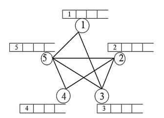
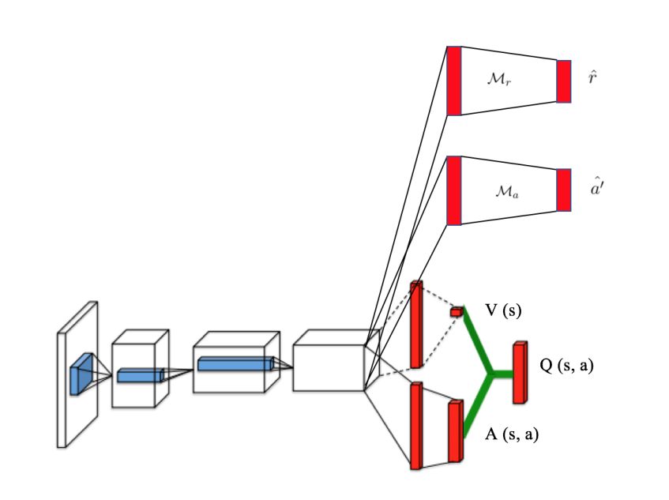
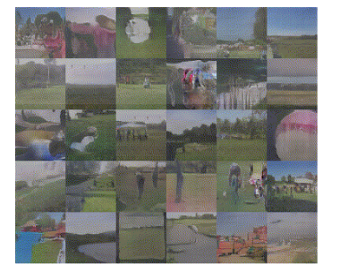
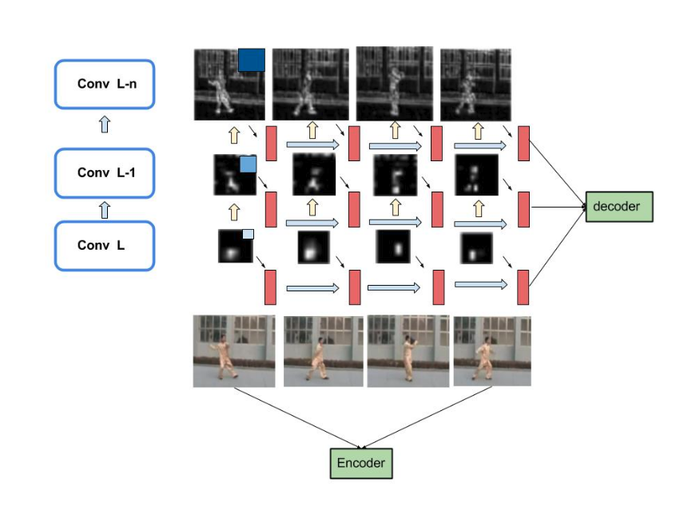

Publications

Xiang Xu, Xiaofang Wang, Kris Kitani. Error Correction Maximization for Deep Image Hashing. British Machine Vision Conference (BMVC), 2018.
[paper]
Jie Liu, Cheng Sun, Xiang Xu, Baomin Xu, Shuangyuan Yu. A Spatial and Temporal Features Mixture Model with Body Parts for Video-based Person Re-Identification.
Arxiv, 2018.

Jie Liu, Baomin Xu, Xiang Xu, Tinglin Xin. A link prediction algorithm based on label propagation. Journal of Computational Science, 2016.
[paper]Other Projects


Yashasvi Agrawal, Xiang Xu. Conditional Video Generation with Scene Dynamics.
16-824 Visual Learning and Recognition Course Project, 2017

Markus Woodson, Xiang Xu, Yubo Zhang. Attention Based Hierarchical RNN Model.
10-807 Deep Learning Course Project, 2016